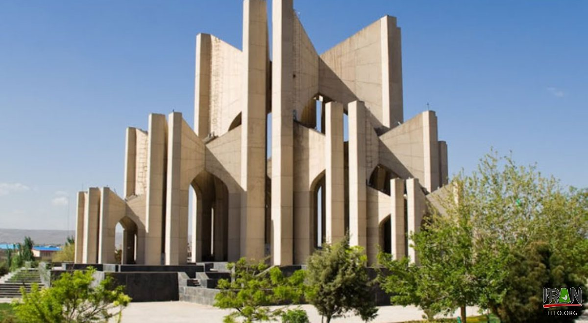
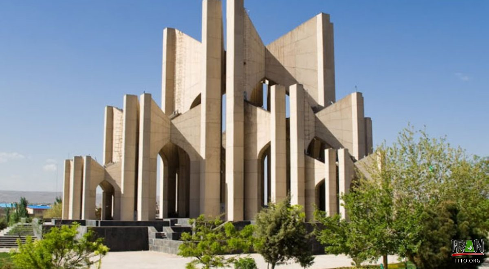

About Tabriz
Tabriz is one of the biggest cities of Iran that is located in the northwest of the country. Recent archeological investigations and explorations in an area that is today called Kaboud Mosque (lit. Crimson Mosque) have estimated this area to be 4500 years old. The ancient city of Tabriz has long been a major player in the history of Iran. Many of the sociopolitical movements of Iran commenced from this city and from there spread to other cities. That is the reason they call Tabriz the City of the First’s.
Tabriz Bazar
Tabriz's bazaris one of the most important attractions of the city and you should plan to visit it if you are going to travel to Tabriz. Thousands of years ago, it used to be located on way of the Silk Road and even today is considered as one of the most important commercial and trade centers of Iran. Its bazar belongs to ancient times and has entered UNESCO’s World Heritage Status. Even though it is considered as the beating heart of Iran’s economy in the northwest of the country, thanks to its commercial function, still this intertwining labyrinth is one of the most astonishing tourist attractions of the city and portrays the glory and grandeur of Iranian architecture before the eyes of the world. Moreover, every year, in Moharrem, which takes 10 days, when the biggest religious ceremony and festival is held throughout the country, Tabirz’s bazar plays the role of one of the most important hubs for holding this cultural and religious ceremony.
.jpeg)
Tabriz Tourist Attractions
Even though Kaboud Mosque, Qari Bridge, Clock Tower and Museum, the roofed up Bazar, Constitutionalist Movement Museum, Eil Goli Green Space, Ali’Shah Mosque, and Maqbarat’al Sho’araa (lit. the Tomb of Poets) are the most noticeable attractions of this city, and each is indeed a clear testimony to the history and art of it, still becoming familiar with the local culture of the Tabriz-dwellers amounts to the most exciting part of any travel to Tabriz. The love song known as Ashiqi, which is played with local instruments and sang through folkloric lyrics, and the details of the nomadic life of the Shah’Savan tribe are among the most glamorous aspects of the local culture of the Turkish-speaking Tabrizians.
.jpeg)
The rocky village of Kandowan, portrays a truly creative juxtaposition of nature and art before the eyes of the tourists and visitors who travel to Tabriz. In addition, the historical churches of Saint Stephanous is one of the other tourist attractions of the city that, referring to the observations made by tourist media, is highly popular among the tourists.
Tabriz People
The people of Tabriz are very hospitable and known to regard qualitative and esthetic aspects of culinary quite highly, and thus such an attention paid to dishes and culinary is one of the most singled out aspects of their culture. Thus, to enjoy sitting before a colorful table flourished with highly and eye-pleasingly decorated dishes served for the guests and visitors is considered as one of the joyful experiences that gratify tourists while visiting Tabriz. It is also an industrial city and numerous heavy and light industries are found in operation all around the city that play a note-worthy role not only in Iran’s economy, but also in that of the neighboring countries.
Tabriz Climate
Tabriz is a mountainous city and the hills located on its outskirt are covered in snow for nearly half of the year, and, for this reason, it also has a mild cool summer, hence an ideal trip destination for summer and winter travels both.